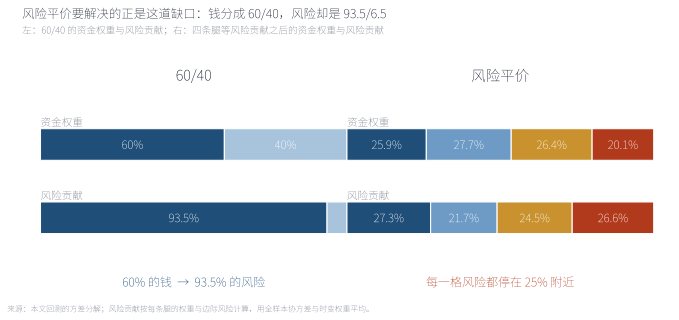
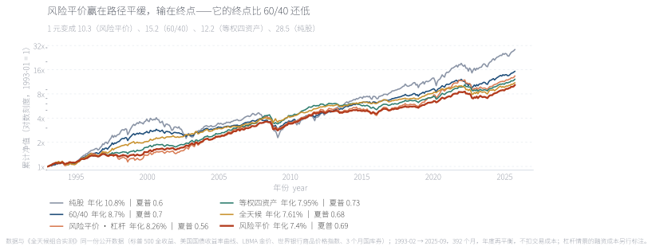
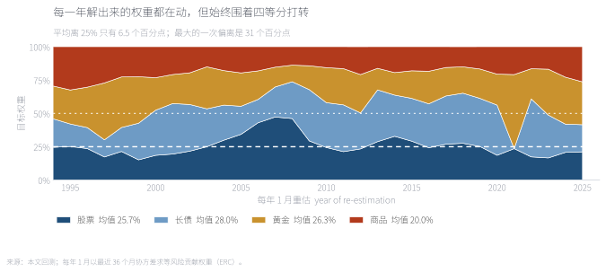
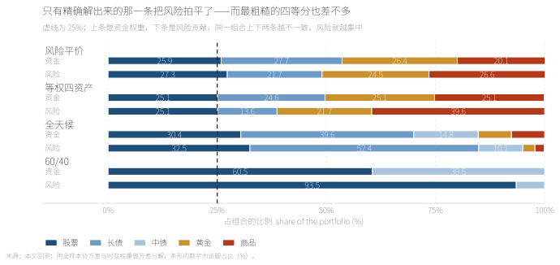
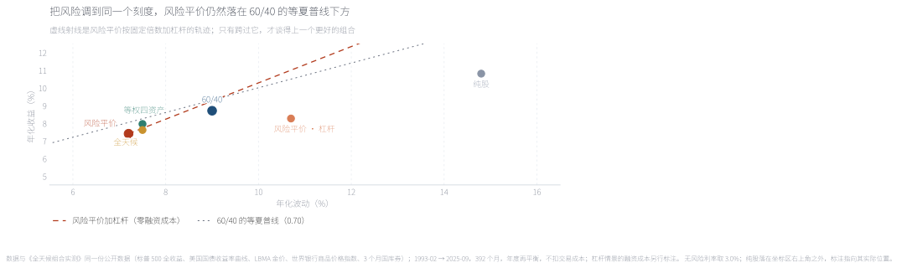
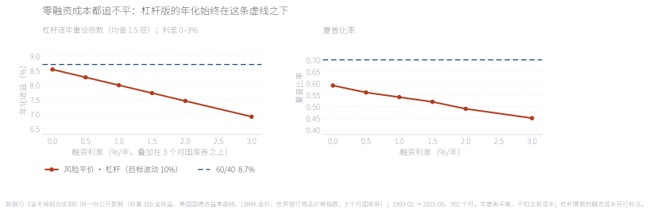
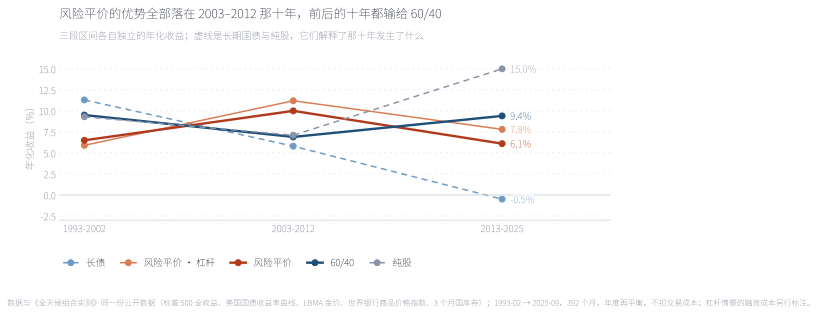
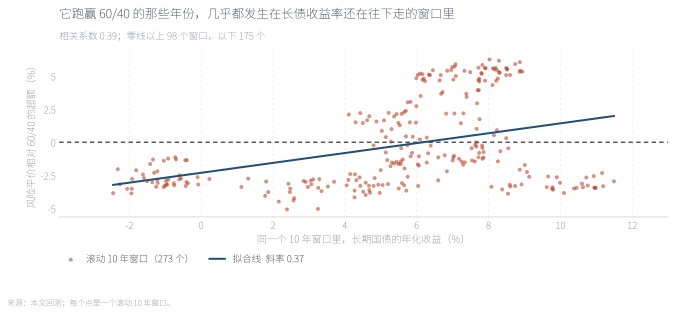
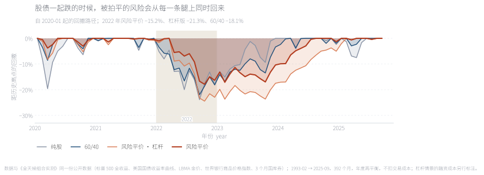
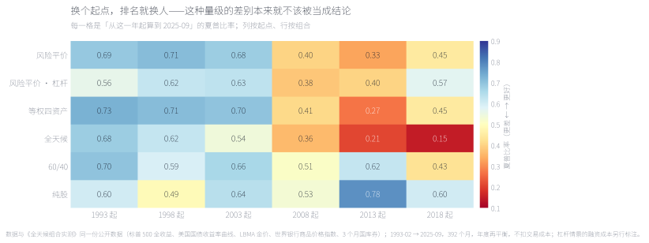

风险平价是一条几乎无可反驳的原则：不按资金分配，按风险分配。用 1993-02 至 2025-09 共 392 个月的美国数据，把四条腿（股票、长债、黄金、商品）每年 1 月按最近 36 个月协方差重解一次权重，32.7 年跑出来是年化 7.40%、波动 7.2%、最大回撤 −22.5%、夏普 0.69。机制确实成立——60/40 里 60% 的钱拿走 93.5% 的风险，而风险平价把四条腿的风险拍到 27.3 / 21.7 / 24.5 / 26.6。但把风险拍平之后，收益没有跟上来：它比 60/40 少 1.3 个百分点年化，甚至输给最笨的 25/25/25/25（夏普 0.73 对 0.69）；而要补回这 1.3 个点就得上杠杆，上了杠杆之后，2022 年它跌得比 60/40 还深。 Risk parity is close to unarguable as a principle: allocate by risk, not by capital. On 392 monthly US observations from February 1993 to September 2025, re-solving an equal-risk-contribution portfolio across four legs (equities, long bonds, gold, commodities) every January from the trailing 36-month covariance, it returns 7.40% a year with 7.2% volatility, a −22.5% maximum drawdown and a Sharpe ratio of 0.69 over 32.7 years. The mechanism works — in a 60/40, sixty per cent of the capital carries 93.5% of the risk, while risk parity holds the four legs at 27.3 / 21.7 / 24.5 / 26.6. But flattening the risk does not bring the return with it: it earns 1.3 points a year less than the 60/40, and loses even to the dumbest possible 25/25/25/25 (Sharpe 0.73 against 0.69). Closing that 1.3-point gap requires leverage — and with leverage, 2022 hurt more than the 60/40 it was trying to beat.
摘要本文检验一条被广泛接受的原则：组合应该按风险分配，而不是按资金分配。样本是 1993-02 至 2025-09 共 392 个月的美国月度数据，与《全天候组合实测》《永久组合实测》《60/40 及其变体》完全同一份公开数据管线。四条腿是股票、长债、黄金、商品；等风险贡献（ERC）权重每年 1 月用最近 36 个月协方差重解一次，年内随价格漂移。结果分三层：机制成立（四条腿的风险贡献被拍到 27/22/25/27，而 60/40 是 93.5/6.5）；收益不成立（年化 7.40%，比 60/40 低 1.3 个百分点，也不如四等分）；优势是条件的（全部来自 2003–2012 的长债牛市，滚动十年窗口里只有 36% 跑赢）。边界样本从 1993 年开始，不含 1970 年代；债券用收益率曲线合成而非基金净值；黄金是现货裸价；全部是美国资产，不扣交易成本与税。
AbstractThis paper tests a widely accepted principle: portfolios should be allocated by risk, not by capital. The sample is 392 monthly US observations from February 1993 to September 2025, on exactly the same public data pipeline as the All Weather, Permanent Portfolio and 60/40 notes. The four legs are equities, long bonds, gold and commodities; equal-risk-contribution (ERC) weights are re-solved each January from the trailing 36-month covariance and allowed to drift within the year. The result has three layers: the mechanism holds (the four legs' risk contributions land at 27/22/25/27, against 93.5/6.5 for a 60/40); the return does not (7.40% a year, 1.3 points below the 60/40 and behind a naive four-way split); and the advantage is conditional (all of it comes from the 2003–2012 bond bull market, with only 36% of rolling ten-year windows won). Limits the sample starts in 1993 and excludes the 1970s; bonds are synthesised from the yield curve rather than taken from fund NAVs; gold is spot without carry; everything is US, and transaction costs and taxes are ignored.
关键词 风险平价 · 等风险贡献 · 资产配置 · 杠杆 · 融资成本 · 债券牛市Keywords risk parity · equal risk contribution · asset allocation · leverage · funding cost · bond bull market
先说清楚三个经常被混着用的名字。等风险贡献（ERC）是一个数学条件：调整权重，让每条腿对组合方差的边际贡献相等。风险平价是这条条件加上资金约束后的做法——通常意味着低波动资产拿更多资金、高波动资产拿更少。全天候是桥水那条具体产品线，它按经济环境（增长与通胀的四种组合）分配风险，不等于四条腿各 25%。本文测的是第一个和第二个：一条可以完全写下来的规则。
它想解决的是一道很直观的缺口。把 60% 的钱放进股票、40% 放进债券，拿到的并不是 60/40 的收益结构，而是 60/40 的资金结构和93.5/6.5 的风险结构——股票那条腿的波动是债券的两倍多，60% 的钱自己就扛下了九成以上的风险。风险平价要做的，是把这道缺口补上：不再让资金比例相等，而让每一条腿扛同样的风险。
代价也藏在这个动作里。要把高波动资产的风险压到 25%，就得给它更少的资金；省下来的资金要买低波动资产，而那些资产的长期收益通常更低。于是风险被拍平的同时，组合的收益也被一起拍下去了。要把它补回来，只有一条路——加杠杆买整个组合。这就是为什么风险平价在实践里总是和杠杆绑在一起，也是本文要回答的第三个问题。
所以全文要回答的是三件事：（一）风险真的被拍平了吗？（二）拍平之后收益差多少，能不能靠杠杆补回来？（三）它的优势是规则本身带来的，还是特定时代给的？
Three names get used interchangeably and should not be. Equal risk contribution (ERC) is a mathematical condition: move the weights until every leg contributes the same amount to portfolio variance. Risk parity is that condition plus a capital constraint — in practice, low-volatility assets get more of the money and high-volatility assets less. All Weather is Bridgewater's specific product line, which budgets risk across economic environments (the four combinations of growth and inflation) and is not a four-way split. This paper tests the first two: a rule that can be written down completely.
It exists to close a specific gap. Put 60% of the money in equities and 40% in bonds and you do not get a 60/40 return structure, you get a 60/40 capital structure and a 93.5/6.5 risk structure — equities are more than twice as volatile as the bond leg, so 60% of the capital carries more than ninety per cent of the risk on its own. Risk parity closes that gap: instead of equalising capital, it equalises the risk each leg carries.
The cost hides in the same move. To hold a volatile asset at a quarter of the risk you must give it less capital, and the capital freed up buys low-volatility assets, which usually earn less over the long run. So flattening the risk flattens the return along with it. The only way to bring the return back is to lever the whole portfolio — which is why risk parity and leverage travel together in practice, and why it is the third question here.
Three questions follow. (1) Is the risk actually flattened? (2) Once it is, how much return is given up, and can leverage buy it back? (3) Is the advantage a property of the rule, or of a particular era?

左边是 60/40：60% 的钱扛着 93.5% 的风险，债券那 40% 几乎是陪衬。右边是四条腿的等风险贡献解：资金权重 25.9% / 27.7% / 26.4% / 20.1%，风险贡献 27.3% / 21.7% / 24.5% / 26.6%——四格都停在 25% 附近。这张图里最值得注意的是右边那条"资金权重"横条几乎就是四等分：真正被平掉的是风险，而资金分配只是被动地跟过去。这也预告了后面的结果：如果解出来的权重离 25% 只有几个百分点，那么最笨的四等分也应该差不多。
The left column is the 60/40: 60% of the capital carries 93.5% of the risk, and the bond sleeve is nearly decoration. The right column is the four-leg equal-risk-contribution solution: weights of 25.9% / 27.7% / 26.4% / 20.1% and risk contributions of 27.3% / 21.7% / 24.5% / 26.6% — all four cells sitting near 25%. What is worth noticing is that the right-hand "capital weight" bar is almost a four-way split: the thing being equalised is the risk, and the capital allocation follows passively. That also foreshadows the result: if the solved weights sit only a few points away from 25%, the dumbest possible quartering should land in roughly the same place.
来源：本文回测的方差分解；风险贡献按每条腿的权重与边际风险计算，用全样本协方差与时变权重平均。Source: author's variance decomposition; risk contributions from each leg's weight and marginal risk, averaged over the full sample using time-varying weights.
样本为 1993-02 至 2025-09 共 392 个月，32.7 年，与站上其他三篇组合实测完全同一份公开数据：股票＝标普 500 全收益；长债＝30 年期美国国债（按久期 15 用收益率曲线合成）；黄金＝LBMA 伦敦金价；商品＝世界银行商品价格指数；现金＝3 个月国库券。样本从 1993-02 而不是 1990-01 开始，是因为 ERC 需要 36 个月的回看窗口，而数据从 1990-01 起——前 36 个月只能用来估协方差，不能用来记账。
权重解法的口径写在下面三行里，因为它决定了后面所有数字：每年 1 月用最近 36 个月的样本协方差求一组等风险贡献权重；解出来的权重在年内随价格漂移，到次年 1 月重新解一次。这是站上「年度再平衡」的统一口径，和永久组合、60/40 两篇可以直接横向比较。求解的校验结果：四条腿的风险贡献为 [25%, 25%, 25%, 25%]，最大偏差 0.0。
杠杆部分用了两套口径，因为两者差别很大，而这个差别本身就是结论的一部分。事后匹配：把倍数定在 1.25 倍，让整段样本的波动刚好等于 60/40 的 9.0%——这是一把事后才拿得到的尺子，只用来问"风险调到同一刻度后会怎样"。可实施：逐年按目标波动 10% 重设倍数，倍数限制在 1.0 到 3.0 倍之间，全样本均值约 1.5 倍——这是真的能照着做的版本。两套口径的融资成本都按3 个月国库券 + 利差计，利差从 0 扫到 3%。
The sample is 392 monthly US observations from February 1993 to September 2025 — 32.7 years — on exactly the same public data as the three other portfolio tests on this site: equities are the S&P 500 total return; long bonds are 30-year Treasuries synthesised from the yield curve at duration 15; gold is the LBMA London price; commodities are the World Bank commodity price index; cash is the three-month T-bill. The sample starts in February 1993 rather than January 1990 because ERC needs a 36-month lookback, and the data begins in January 1990: the first 36 months can estimate a covariance matrix but cannot hold a position.
Three lines define the weight rule, and they determine every number that follows: every January, solve for equal-risk-contribution weights from the trailing 36-month sample covariance; those weights then drift with prices within the year and are re-solved the following January. This is the site's standard annual-rebalancing convention, directly comparable with the Permanent Portfolio and 60/40 notes. The solver's verification: the four legs' risk contributions come out at [25%, 25%, 25%, 25%] with a maximum deviation of 0.0.
Leverage is run two ways, because the gap between them is itself a result. Ex-post matching: fix the multiplier at 1.25x so that realised volatility over the whole sample equals the 60/40's 9.0% — a ruler you can only hold after the fact, used purely to ask "what happens at the same scale of risk". Implementable: reset the multiplier each year to a 10% volatility target, capped between 1.0x and 3.0x, averaging about 1.5x over the sample — something you could actually have run. Both pay funding of three-month T-bills plus a spread, with the spread swept from 0 to 3%.
先把整段样本摊开看。同一份数据、同一条再平衡口径，五个组合的排序是这样的：纯股 10.80% 的年化配 −50.9% 的回撤；60/40 是 8.70% 配 −27.0%；等权四资产 7.95% 配 −23.0%；全天候 7.61% 配 −21.7%；风险平价 7.40% 配 −22.5%。风险平价排在最后一位，而它引以为豪的风险指标只有一个能拿出来看：回撤比 60/40 浅 4.5 个百分点。
把这些数字换成钱更直观：1 元在风险平价里长成 10.3 元，在 60/40 里长成 15.2 元——少了将近三分之一。同一段时间里等权四资产是 12.2 元，只比风险平价多一点点风险，却多拿了两成终点。
Start by laying the whole sample out. On the same data and the same rebalancing convention, the ranking is: all-equities at 10.80% a year against a −50.9% drawdown; the 60/40 at 8.70% against −27.0%; equal-weighted four assets at 7.95% against −23.0%; All Weather at 7.61% against −21.7%; and risk parity last at 7.40% against −22.5%. The only risk number it can point to is a drawdown 4.5 points shallower than the 60/40's.
In money: one dollar compounds to 10.3 under risk parity and 15.2 under a 60/40 — about a third less. Equal-weighted four assets gets to 12.2 while taking almost the same risk, more than twenty per cent further than risk parity.

对数刻度下看得很清楚：风险平价那条线（最粗）的形状确实比 60/40 平——它的斜率更稳，中途没有出现过 −27% 那种坡。问题在终点：它平,但它低。32.7 年下来 1 元变 10.3 元，而 60/40 是 15.2 元、等权四资产 12.2 元、纯股 28.5 元。这条图上真正值得看的是两条线的间距随时间的变化：1993 到 2002 年风险平价一直贴着 60/40 的下方走，2003 到 2012 年它反超并且拉开，2013 年之后又被反超、并且这次差距一路扩大。
On a log scale the shape is plain: the risk-parity line (the thickest one) is genuinely smoother, with no −27% slope in it. The problem is the endpoint — it is flat, and it is low. Over 32.7 years one dollar becomes 10.3, against 15.2 for the 60/40, 12.2 for a four-way split and 28.5 for equities. What is worth watching on this chart is how the gap moves: through 1993–2002 risk parity hugs the underside of the 60/40, from 2003 to 2012 it overtakes and pulls away, and after 2013 it is overtaken again — this time for good.
来源：本文回测；数据与《全天候组合实测》同一份公开数据，1993-02 至 2025-09 共 392 个月，年度再平衡，不扣交易成本。Source: author's backtest; same public data as the All Weather note, 392 months from February 1993 to September 2025, annual rebalancing, before costs.
一个必须写下来的细节：风险平价在这段样本里最大的那次回撤不是 2022 年，是 2008 年——从 2008-05 的高点到 2009-02 的低点跌了 22.5%，和 60/40 的 −26.9% 是同一个窗口。原因是商品那条腿：2008 年商品指数跌了 38.6%，而它在组合里占两成资金。风险平价的浅回撤不来自"每条腿都很稳"，而来自"四条腿同时崩的时候少"——2008 年股票 −37.0%，长债 +32.8%，两条负相关的腿救了这个组合。
One detail has to be written down: risk parity's worst drawdown in this sample is not 2022, it is 2008 — 22.5% from the May 2008 peak to the February 2009 trough, the same window that took the 60/40 down 26.9%. The culprit is the commodity leg: the commodity index fell 38.6% in 2008 while carrying a fifth of the portfolio. Risk parity's shallow drawdown does not come from every leg being steady; it comes from the legs rarely breaking together — in 2008 equities fell 37.0% and long bonds rose 32.8%, and the two opposite movements rescued the portfolio.
如果只看宣传，风险平价像是一个复杂的优化产品。所以第二步把它拆开：每年解出来的那组权重到底长什么样，以及它和"直接四等分"差多少。
On the marketing, risk parity sounds like a complex optimised product. So the second step opens it up: what the weights actually look like each year, and how far they sit from a plain four-way split.

权重确实在动——32 次重估里没有一次解出正好 25/25/25/25。但动的幅度比想象中小得多：平均离 25% 只有 6.5 个百分点，最大的一次偏离是 30.6 个百分点。四条腿的平均权重是股票 25.9%、长债 27.7%、黄金 26.4%、商品 20.1%；商品被压得最低，恰恰因为它是四条腿里波动最高的那条（18.3%，股票是 14.8%）。换句话说，这条规则做的全部事情，就是把资金从波动最高的资产挪一点给波动最低的资产，而挪动的幅度只有几个百分点。
The weights do move — not one of the 32 re-estimations lands on exactly 25/25/25/25. But they move far less than one might expect: an average of 6.5 percentage points away from 25%, with a single worst deviation of 30.6 points. The four legs average 25.9% equities, 27.7% long bonds, 26.4% gold and 20.1% commodities; commodities take the smallest share precisely because they are the most volatile leg (18.3% against 14.8% for equities). In other words the entire rule amounts to shifting a few percentage points of capital out of the most volatile asset and into the least.
来源：本文回测；每年 1 月以最近 36 个月协方差求等风险贡献权重（ERC），白色虚线为 25%。Source: author's backtest; equal-risk-contribution weights solved each January from the trailing 36-month covariance, with the white dashed line at 25%.
把"资金"和"风险"并排放在一张图上，才是这篇文章的核心证据。下面这张图有四行，分别是风险平价、等权四资产、全天候和 60/40；每一行上面是资金权重，下面是它对应的风险贡献。
Putting capital and risk side by side on one chart is the central evidence of this note. The chart below has four rows — risk parity, equal-weighted four assets, All Weather and the 60/40 — each showing capital weights on top and the matching risk contributions underneath.

四个组合的对比把话说完了。60/40：60.5% 的资金对 93.5% 的风险，几乎全部压在股票一条腿上。等权四资产：资金是 25.1 / 24.6 / 25.1 / 25.1，看起来最公道，风险却是 25.1 / 13.6 / 21.7 / 39.6——商品一条腿拿走四成。风险平价：资金 25.9 / 27.7 / 26.4 / 20.1，风险 27.3 / 21.7 / 24.5 / 26.6，四格全部落在 25% 的 2.3 个百分点以内。全天候：资金 30.4 / 39.6 / 14.8 / 7.6 / 7.6，风险 32.5 / 52.4 / 10.1 / 2.8 / 2.1——它按经济环境分风险，不是按均等分风险，长债一条腿就占了一半以上。所以第一层答案是：风险确实被拍平了，而且是这四个组合里唯一一个真正拍平的。
The comparison finishes the argument. 60/40: 60.5% of the capital against 93.5% of the risk, essentially all of it in one leg. Equal-weighted four assets: capital at 25.1 / 24.6 / 25.1 / 25.1 looks fairest, but the risk is 25.1 / 13.6 / 21.7 / 39.6 — commodities alone take four tenths. Risk parity: capital at 25.9 / 27.7 / 26.4 / 20.1 and risk at 27.3 / 21.7 / 24.5 / 26.6, every cell inside 2.3 points of 25%. All Weather: capital at 30.4 / 39.6 / 14.8 / 7.6 / 7.6 and risk at 32.5 / 52.4 / 10.1 / 2.8 / 2.1 — it budgets risk by economic environment rather than equally, and long bonds alone carry more than half. So the first answer is: the risk really is flattened, and this is the only one of the four portfolios that truly flattens it.
来源：本文回测；风险贡献按每条腿的权重与边际风险计算，用全样本协方差与时变权重平均；组合波动风险平价为 7.63%、等权四资产 7.61%、全天候 7.56%、60/40 为 9.17%。Source: author's backtest; risk contributions from each leg's weight and marginal risk, averaged over the full sample with time-varying weights; portfolio volatility is 7.63% for risk parity, 7.61% for the four-way split, 7.56% for All Weather and 9.17% for the 60/40.
但第二层的问题就藏在这张图里，而且比第一层的答案更锋利：如果解出来的权重离 25% 只有 6.5 个百分点，那"解"这件事本身值多少钱？答案在 Exhibit 2 已经给了——等权四资产用最笨的办法拿到 7.95% 和 0.73，两项都高于风险平价的 7.40% 和 0.69。这不是"差不多"，是优化输给了不优化：每年花力气估协方差、解非线性方程，最后比什么都不做少了半个多点的年化。等权四资产之所以赢，恰恰因为它的风险分配并不平均（商品占 39.6%），而那几条被过配的腿在这段样本里并没有更差。
But the second layer's problem is hiding inside that same chart, and it is sharper than the first answer: if the solved weights sit 6.5 points from 25%, what is the solving worth? Exhibit 2 already answered — quartering the four legs returns 7.95% and a 0.73 Sharpe, both above risk parity's 7.40% and 0.69. This is not a tie; the optimisation loses to the non-optimisation. Estimating covariances and solving a nonlinear system every January costs more than half a point of annual return. The four-way split wins precisely because its risk budget is uneven — commodities take 39.6% — and, in this sample, the legs it overweights were not worse.
到这里有一个合理的反驳：风险平价本来就不是为了在相同资金下比收益，它是为了在相同风险下比效率。所以第三步把所有组合放到一张风险—收益散点图上，再补一条 60/40 的等夏普线。
At this point there is a fair objection: risk parity was never meant to beat anything at equal capital, only at equal risk. So the third step puts everything on one risk/return scatter and adds the 60/40's iso-Sharpe line.

虚线是风险平价按固定倍数加杠杆的轨迹（零融资成本下）：它和 60/40 的等夏普线（点线）几乎平行，但一直压在下面。零成本时两条线的夏普是 0.69 与 0.70——差得极小，小到没有统计意义，但它说明了杠杆能做什么、不能做什么：杠杆可以把你在这条线上移动到任意波动刻度，但不能把线抬起来。散点里橘红色那一点是"可实施"的杠杆版（逐年重设倍数，波动 10.7%、年化 8.26%），它比虚线低得多，因为逐年重设倍数和真实融资成本都在扣。右上角灰色那一点是纯股，它的位置说明另一件事：在这段样本里，单纯的股票暴露既不是最高效的点，也不是最差的点。
The dashed line is risk parity levered at a constant multiple with zero funding cost. It runs almost parallel to the 60/40's iso-Sharpe line (the dotted line) but always underneath it: at zero cost the two Sharpes are 0.69 and 0.70, a difference too small to matter, and that is exactly the point — leverage moves you anywhere along the line, but it cannot lift the line. The orange point is the implementable levered version (multiplier reset annually, 10.7% volatility, 8.26% a year), sitting well below the dashed track because annual re-sizing and real funding costs both take a cut. The grey point in the top right is all-equities, and its position says something else: in this sample, plain equity exposure is neither the most efficient point nor the worst.
来源：本文回测；无风险利率取 3.0%，杠杆情景的融资成本另行标注；纯股落在坐标区右上角之外，标注指向其实际位置。Source: author's backtest; risk-free rate set at 3.0%, with funding costs for the levered scenarios flagged separately; all-equities sits beyond the top-right corner of the plot, and the label points to its actual position.
然后是杠杆最诚实的那部分：让它真的付钱。下面左图是融资利差从 0 扫到 3% 时"可实施"版本的走势，右图是同一批情景的夏普。
Then comes the most honest part of leverage: making it pay. The left panel below sweeps the funding spread from 0 to 3% for the implementable version, and the right panel shows the Sharpe ratio across the same scenarios.

左图的深蓝虚线是 60/40 的年化 8.70%，右图是它的夏普 0.70。即使在零融资成本那一点，杠杆版也追不上 8.70% 与 0.70——零利差时是 8.53% 和 0.59。利差每加 0.5 个百分点，年化掉约 0.27 个百分点：0.5% 时 8.26%、1% 时 7.99%、2% 时 7.45%、3% 时 6.91%（夏普 0.45）。所以本文最锋利的一句结论出现在这里：盈亏平衡的融资利差不存在。通常大家争论"融资成本要多少才划算"，这里不需要争——不划算的地方不在利差，在于杠杆版的基线本身就比 60/40 低。
The dark-blue dashed line on the left is the 60/40's 8.70% a year; on the right, its 0.70 Sharpe. Even at the zero-funding-cost point the levered version does not reach either — 8.53% and 0.59. Each half-point of spread costs about 0.27 points of annual return: 8.26% at 0.5%, 7.99% at 1%, 7.45% at 2%, 6.91% at 3% (Sharpe 0.45). Which produces the sharpest single claim in this note: the break-even funding spread does not exist. The usual argument is about how much funding cost is tolerable; no argument is needed here, because the gap is not in the spread — it is in the baseline.
来源：本文回测；杠杆版按目标波动 10% 逐年重设倍数（限制在 1.0–3.0 倍，均值约 1.5 倍），融资成本＝3 个月国库券 + 利差，未计追加保证金与强制平仓。Source: author's backtest; the levered portfolio resets its multiplier annually to a 10% volatility target (capped at 1.0–3.0x, averaging about 1.5x), funded at three-month T-bills plus the spread, with no margin calls or forced liquidation modelled.
还有一个更安静、但更彻底的数字，来自"事后匹配"那一版：把倍数定在 1.25 倍，让它的波动正好等于 60/40 的 9.0%，得到年化 8.43%、夏普 0.67、最大回撤 −27.8%。把风险调到同一个刻度之后，风险平价的浅回撤也一起消失了——−27.8% 比它想打败的 60/40 的 −27.0% 还深 0.8 个百分点。这是这篇文章里最反直觉的一个发现：回撤浅和收益低本来就是同一件事的两面，你不能只要前面那一面。
There is a quieter but more complete number in the ex-post version: set the multiplier at 1.25x so that its volatility is exactly the 60/40's 9.0%, and it returns 8.43% a year with a 0.67 Sharpe and a −27.8% maximum drawdown. Put both portfolios on one risk scale and risk parity's shallow drawdown disappears too — −27.8% is 0.8 points deeper than the −27.0% of the 60/40 it set out to beat. This is the most counter-intuitive finding here: a shallower drawdown and a lower return are two faces of the same fact, and you cannot keep only the first.
把 32.7 年切成三段，方向每一段都不一样。1993–2002（119 个月）：风险平价年化 6.5%，60/40 是 9.5%，同一条长债腿 11.3%，是整个样本里最好的一条腿。2003–2012（120 个月）整个翻过来：风险平价 10.0%，60/40 6.9%，长债只剩 5.8%。2013–2025（153 个月）又翻回去：风险平价 6.1%，60/40 9.4%，长债是 −0.5%。
Cut 32.7 years into three and the direction flips every time. 1993–2002 (119 months): risk parity 6.5% a year against the 60/40's 9.5%, with long bonds — its largest single holding — the best leg in the whole sample at 11.3%. 2003–2012 (120 months) reverses it entirely: risk parity 10.0%, the 60/40 6.9%, long bonds down to 5.8%. 2013–2025 (153 months) reverses back: risk parity 6.1%, the 60/40 9.4%, long bonds at −0.5%.
杠杆版在三段里是 5.9% / 11.2% / 7.8%。它没有改变这个形状，只是把每一段都放大了一点：顺风的那一段放大，逆风的那一段也放大。
The levered version runs 5.9% / 11.2% / 7.8% across the same three stretches. It does not change the shape, it only scales each one: the tailwind and the headwind alike.

每条实线的斜率是那个十年各自的年化收益。要读的不是高度，是方向：只有中间那一段，风险平价的斜率比 60/40 更陡；两头都是 60/40 更陡，而且后一段差距更大（6.1% 对 9.4%）。两条虚线说明了原因——长债从 11.3% 一路掉到 −0.5%，而风险平价恰好是那个把钱压在长债上最多的组合。
The slope of each solid line is that decade's annualised return. What matters is not the height but the direction: only in the middle stretch does risk parity climb faster than the 60/40; both ends favour the 60/40, and the last one by more (6.1% against 9.4%). The two dashed lines explain why — long bonds fell from 11.3% a year to −0.5%, and risk parity is precisely the portfolio that leans hardest on them.
来源：本文回测；三段区间各自独立计算，不等长（119 / 120 / 153 个月），不扣交易成本。Source: author's backtest; the three stretches are computed independently and are not equal in length (119 / 120 / 153 months), before costs.
再往里看一层，会看到一件比"债券拖累"更具体的事。下表是三个十年里四条腿各自跑出来的年化收益：
One layer further in, something more specific than "bonds dragged" shows up. The table below is what each of the four legs actually earned in each decade:
| 资产Asset | 1993–2002 | 2003–2012 | 2013–2025 |
|---|---|---|---|
| 股票Equities | 9.3 | 7.1 | 15.0 |
| 长期国债Long bonds | 11.3 | 5.8 | −0.5 |
| 黄金Gold | 0.1 | 17.6 | 6.3 |
| 商品Commodities | 2.9 | 11.4 | −2.0 |
| 风险平价Risk parity | 6.5 | 10.0 | 6.1 |
| 60/4060/40 | 9.5 | 6.9 | 9.4 |
来源：本文回测；四行资产与两行组合用同一份月度数据、同一套区间。粗体是每列的最高值。Source: author's backtest; the four asset rows and the two portfolio rows use the same monthly data over the same windows. Bold marks the highest value in each column.
中间那十年，黄金 17.6%、商品 11.4%，是四条腿里最好的两条；风险平价在那十年平均把 约 40% 的钱放在这两条腿上（黄金 23.1% + 商品 16.7%），而 60/40 一股都没有。前十年和后十三年恰好相反：黄金只有 0.1% 和 6.3%，商品 2.9% 和 −2.0%，而这两条腿在组合里始终占着四成左右的钱。所以风险平价的超额不是"分散"挣来的，是 2003–2012 那一轮贵金属与商品的大牛市挣来的——一个由 36 个月协方差决定、事后看很像运气的事件。
In the middle decade gold earned 17.6% and commodities 11.4%, the two best legs of the four, and risk parity held about 40% of its money in exactly those two (23.1% gold plus 16.7% commodities) while the 60/40 held none. The first and last stretches are the mirror image: gold at 0.1% and 6.3%, commodities at 2.9% and −2.0%, with the same four tenths of the portfolio parked there throughout. The excess return was not earned by diversification; it was earned by the precious-metal and commodity run of 2003–2012 — an event chosen by a 36-month covariance, and in hindsight very close to luck.
把窗口从"十年"换成"任意一个滚动十年"，同一件事会更清楚。273 个滚动十年窗口里，风险平价只有 98 个（35.9%）跑赢 60/40；最好的一个是 2009-06 结束的那十年（超额 +6.25 个百分点），最差的是 2021-09 结束的那十年（超额 −5.08 个百分点）。横轴是同一个窗口里长期国债的年化收益：两者相关系数 0.386。它跑赢的窗口，几乎都发生在长债收益率还在往下走的那些年里。
Swap "decade" for "any rolling ten years" and the same fact gets clearer. Of 273 rolling ten-year windows risk parity beat the 60/40 in only 98, or 35.9%. The best ends in June 2009 (an excess of +6.25 points); the worst ends in September 2021 (−5.08 points). The horizontal axis is what long bonds earned in that same window, and the correlation is 0.386: the windows it won are almost all windows in which long-bond yields were still falling.

每个点是一个滚动十年窗口。零线以上是跑赢。斜率 0.38 大致的意思是：同一个窗口里长债多涨 1 个百分点，风险平价的超额就多 0.38 个百分点。这不是因果证明，但它足够说明"谁在挣钱"——这一篇里风险平价的超额几乎可以写成"长债收益率的下行幅度"的一个函数。注意最左侧：即使长债年化是正的 2.4%，它仍然可以落后 5 个百分点。
Each dot is one rolling ten-year window; above the zero line it won. A slope of 0.38 says roughly that one extra point of long-bond return in a window buys 0.38 points of excess for risk parity. That is not a proof of causation, but it is enough to say who is earning the money: in this sample the excess is close to a function of how far long-bond yields fell. Note the far left — with long bonds still earning +2.4% a year, it can lose by five points.
来源：本文回测；窗口为 120 个月，逐个向前滚动，共 273 个；两端各留一个完整的十年。Source: author's backtest; 120-month windows rolled forward one month at a time, 273 in total.
风险平价唯一依赖的假设是"四条腿不会同时坏"。这个假设最接近失效的一次是 2022 年。同一份数据里，股票与 10 年期国债的月度相关性在 32.7 年里是 −0.087：接近零，方向正确。但在 CPI 同比高于 5% 的 24 个月里，它翻成 +0.419；只看 2022 年，是 +0.448。
The one assumption risk parity depends on is that the four legs will not fail at the same time. The closest it came to failing is 2022. Over the 32.7 years the monthly correlation between equities and ten-year Treasuries is −0.087: near zero, and of the right sign. Across the 24 months with year-on-year CPI above 5% it flips to +0.419; for 2022 alone it is +0.448.
那 24 个月里四条腿的表现可以直接列出来：股票年化 −3.3%（50% 的月份为正）、长债 −14.2%（42%）、黄金 −0.5%（46%）、商品 −6.3%（42%）。四条腿里没有一条站在正号那一边——注意黄金是 −0.5%，它没有保护任何东西，只是跌得少一点。
Those 24 months can simply be listed: equities −3.3% a year (positive in 50% of months), long bonds −14.2% (42%), gold −0.5% (46%), commodities −6.3% (42%). Not one of the four ends up on the positive side — note gold at −0.5%: it protected nothing, it simply fell less.
2022 全年：风险平价 −15.2%，杠杆版 −21.3%，60/40 −18.1%，纯股 −18.1%，全天候 −20.0%，长债 −31.5%。只有黄金（+0.4%）和商品（+9.6%）是正的，而这两条腿在组合里合起来不到四成。从 2021-12 的高点到 2022-11 的低点，风险平价的回撤是 −17.9%。
For calendar 2022: risk parity −15.2%, the levered version −21.3%, the 60/40 −18.1%, all-equities −18.1%, All Weather −20.0%, long bonds −31.5%. Only gold (+0.4%) and commodities (+9.6%) end positive, and together they are under four tenths of the portfolio. From the December 2021 peak to the November 2022 low, risk parity's drawdown is −17.9%.

四条曲线都是各自相对历史高点的回撤，起点是 2020-01。灰色带是 2022 年。这张图里最重要的一处对比不是深度，是两条蓝线的位置：基础版（深蓝）在 2022 年最深处 −17.9%，比 60/40 的 −22.0% 浅；但杠杆版（橙色）比 60/40 更深，而且水下时间更长。同一个策略，加杠杆前后"浅回撤"这个卖点直接消失。
All four lines are drawdowns from each portfolio's own high-water mark, starting January 2020; the grey band is 2022. The comparison that matters here is not depth but the position of the two blue lines: the unlevered version bottoms at −17.9%, shallower than the 60/40's −22.0%, while the levered version (orange) falls deeper than the 60/40 and stays underwater longer. One strategy, and leverage removes the "shallow drawdown" selling point outright.
来源：本文回测；回撤按每条腿自己的历史高点计算，起点 2020-01 是为了让四条线共用同一段近期历史。Source: author's backtest; each drawdown is measured from that portfolio's own high-water mark, with the January 2020 start chosen so all four lines share one recent history.
把这一节压缩成一句：分散有效的前提是"不同时坏"，而这个前提是一个关于宏观环境的判断，不是一个关于权重的判断。当利率成为唯一的共同因子，四条腿会被推往同一个方向；这时风险平价和 60/40 的差别只剩"每一条腿都跌一点"，而不是"总有一条腿在涨"。
Compressed to one sentence: diversification only works when things do not break together, and that is a claim about the macro environment, not about weights. When rates become the single common factor, all four legs are pushed the same way, and the difference between risk parity and a 60/40 shrinks to "every leg falls a little" instead of "one leg is always rising".
前面所有结论都建立在"从 1993-02 开始"这一个起点上。换六个起点，看六个组合的夏普，会看到一件让这个策略很难被推销的事：起点能把风险平价从"比 60/40 好一点"变成"比 60/40 差一半"。1998 起点它是 0.71，对 60/40 的 0.59，是六个起点里最好的一次；2013 起点它是 0.33，全场最低，而同一个起点上 60/40 是 0.62、纯股是 0.78。
Every result so far rests on one start date, February 1993. Change it six ways and look at Sharpe ratios, and something awkward for anyone selling this strategy appears: the start date can turn risk parity from "a bit better than the 60/40" into "half as good". From 1998 it is 0.71 against the 60/40's 0.59, its best showing of the six; from 2013 it is 0.33, the lowest cell in the table, where the 60/40 scores 0.62 and all-equities 0.78.

每一格是一个"从某年 1 月开始持有到现在"的夏普。三个可以直接读出来的结论：第一，风险平价在六个起点里只在三个（1998、2003、2018）赢过 60/40，而且每次差距都在 0.04 以内；第二，最差的两次（2008 的 0.40、2013 的 0.33）都出现在近十几年the recent era，恰好也是这类策略在公开市场真正流行起来的时点；第三，等权四资产在同一张表里几乎每一格都不比风险平价差——那个不需要解任何矩阵的组合。
Each cell is the Sharpe of a portfolio held from that January to today. Three things read off directly: first, risk parity beats the 60/40 at only three of six starts (1998, 2003, 2018), and each time by less than 0.04; second, its two worst cells (0.40 from 2008, 0.33 from 2013) both sit in the recent era — which is also when the strategy became popular in public markets; third, the equal-weighted four-asset portfolio is no worse than risk parity in almost every cell, and it needs no matrix solved at all.
来源：本文回测；每组从该年 1 月持有至 2025-09，不扣成本；杠杆版按目标波动 10% 逐年重设倍数。Source: author's backtest; each start is held from that January to September 2025, before costs; the levered version resets annually to a 10% volatility target.
最后一步留给你自己。下面这张图不是回测，是一台可以转的旋钮：拖动杠杆倍数和融资利差，净值曲线与六个指标会实时重算。60/40 作为参照固定在灰色虚线上，基础版（不加杠杆）固定在浅色虚线上。
The last step is yours. What follows is not a backtest but a dial: drag the leverage multiplier and the funding spread and the value curve plus six statistics are recomputed live. The 60/40 stays pinned on the grey dashed line, the unlevered version on the pale one.
三个位置值得先试。1.25 倍、利差 0.5%：这是"事后匹配"那一版，波动正好压到 60/40 的 9.0%，年化 8.43%，而最大回撤 −27.8%，比 60/40 的 −27.0% 更深。1.5 倍、利差 0.5%：年化 8.26%，低于不杠杆的 60/40。2.0 倍、利差 0：年化 11.91%，波动 14.33%，夏普反而没有改善——杠杆只能在同一条线上滑动，不能把线抬起来。所有情景都假设你能在任意时点以"3 个月国库券 + 利差"融到资，且不会遇到追加保证金。
Three positions are worth trying first. 1.25x with a 0.5% spread: the "ex-post matched" version, with volatility pinned to the 60/40's 9.0%, returning 8.43% a year and drawing down −27.8%, deeper than the 60/40's −27.0%. 1.5x at 0.5%: 8.26% a year, below the unlevered 60/40. 2.0x at zero cost: 11.91% a year with 14.33% volatility and no better Sharpe — leverage slides you along the line, it cannot lift it. Every scenario assumes you can borrow at three-month T-bills plus the spread at any date, and never face a margin call.
来源：本文回测；月度重算，杠杆收益＝L × 风险平价月收益 − (L−1) × (当月国库券收益 + 利差 ÷ 12)；未计税费、保证金与强平。Source: author's backtest, recomputed monthly: levered return = L x risk-parity monthly return − (L−1) x (that month's T-bill return + spread ÷ 12); taxes, margin and forced liquidation excluded.
回到开头那个问题：不按资金分配、按风险分配，这条原则经得起检验吗。答案分三层，而且三层方向不同。
Back to the opening question: does "allocate by risk, not by capital" survive being tested? The answer has three layers, and they point in different directions.
第一层，机制成立，而且比宣传里更清楚。60/40 里 60% 的钱拿走 93.5% 的风险，这是一句大多数人没算过、但一看就懂的话。风险平价把它拍到 27.3 / 21.7 / 24.5 / 26.6，离 25% 最远只差 2.3 个百分点，求解器给出的残差是 0.0。如果这是一篇只问"风险是否被拍平"的文章，到此就该结束并且是正面结论。
First, the mechanism holds, and more clearly than the marketing suggests. In a 60/40, sixty per cent of the capital carries 93.5% of the risk — a sentence most people have never computed and immediately understand. Risk parity flattens that to 27.3 / 21.7 / 24.5 / 26.6, the furthest only 2.3 points from a quarter, with a solver residual of 0.0. If this piece only asked whether the risk gets flattened, it would end here, favourably.
第二层，收益没有跟上来，而且不是差一点点。32.7 年年化 7.40%，比 60/40 少 1.30 个百分点，1 元变 10.3 元对 15.2 元。更难解释的是它输给了最笨的那个组合：同样四条腿直接四等分，年化 7.95%、夏普 0.73，两项都更高。解出来的权重平均只离 25% 有 6.5 个百分点，而这 6.5 个百分点足以让它排名垫底——这件事本身说明，在两三百个观测上做协方差优化，优化的边际价值接近于零。
Second, the return does not follow, and not by a little. 7.40% a year over 32.7 years, 1.30 points behind the 60/40, with one dollar becoming 10.3 against 15.2. Harder to explain is that it loses to the dumbest possible portfolio: quartering the same four legs returns 7.95% with a Sharpe of 0.73, higher on both. The solved weights sit an average of just 6.5 points from a quarter, and those 6.5 points are enough to put it last — which by itself says the marginal value of covariance optimisation on a few hundred observations is close to zero.
第三层，它的优势有明确的前提，而且前提不是"风险分散"。三个十年里它输掉两个；273 个滚动十年窗口里只赢 98 个（35.9%）；赢的那些窗口与长债收益率下行相关 0.386。再看表 1：2003–2012 那十年，它把约 40% 的钱放在黄金（17.6%）和商品（11.4%）上——那是四条腿里最好的两条，也是 60/40 一股都没有的两条。风险平价的超额来自那一轮贵金属与商品牛市，而不是来自"风险被拍平"这件事本身。这个区别很重要：前者是一次事件，后者是一条原则。
Third, its edge comes with an explicit precondition, and that precondition is not "diversification". It loses two of three decades; it wins 98 of 273 rolling ten-year windows, 35.9%; the windows it wins correlate 0.386 with the fall in long-bond yields. Table 1 again: in 2003–2012 it held roughly 40% of its money in gold (17.6%) and commodities (11.4%), the two best legs of the four and the two the 60/40 never owned. The excess came from the precious-metal and commodity bull market, not from the act of flattening risk. That distinction matters: one is an event, the other a principle.
于是唯一的出路只剩杠杆，而杠杆有自己的账。要追上 60/40 的 8.70%，用可实施口径按目标波动 10% 逐年重设倍数（平均约 1.5 倍），即便融资成本为零也只有 8.53%，夏普 0.59。本文最锋利的一句结论在这里：盈亏平衡的融资利差不存在。通常大家讨论"融资成本要多少才划算"，这里不需要讨论——不划算的地方不在利差，在基线。而如果强行匹配 60/40 的 9.0% 波动（1.25 倍），最大回撤变成 −27.8%，比它想打败的 60/40 的 −27.0% 还深 0.8 个百分点。回撤浅和收益低本来就是同一件事的两面。
Which leaves leverage as the only route, and leverage keeps its own books. To chase the 60/40's 8.70% with an implementable 10% volatility target reset annually (about 1.5x on average) returns 8.53% even at zero funding cost, with a Sharpe of 0.59. The sharpest claim in this note sits here: the break-even funding spread does not exist. The usual argument is about how much funding cost is tolerable; no argument is needed, because the problem is not the spread but the baseline. Force the volatility to match the 60/40's 9.0% (1.25x) and the maximum drawdown becomes −27.8%, 0.8 points deeper than the −27.0% it set out to beat. A shallow drawdown and a low return are two faces of the same fact.
边界必须写清楚，因为它们全都朝着同一个方向。第一，样本从 1993-02 开始，不含 1970 年代——那正是股票与债券同跌、也是这套方法理论上最难受的十年，缺了这一段，本文的 −1.3 个百分点更像是乐观估计。第二，债券是用收益率曲线合成的（收益＝收益率 ÷ 12 − 久期 × 收益率变动），久期固定，忽略凸性，在 2020–2021 那种极低收益率下误差最大。第三，黄金是现货裸价、没有租金与仓储，商品是世界银行价格指数、不含展期收益。第四，杠杆情景是事后模拟，未计保证金、强平与融资额度。第五，不扣交易成本与税。
The boundaries need stating, because they all lean the same way. First, the sample starts in February 1993 and excludes the 1970s — precisely the decade in which stocks and bonds fell together and this method should have been most uncomfortable; without it, the −1.3 points here is closer to an optimistic estimate. Second, bonds are synthesised from the yield curve (return = yield ÷ 12 − duration x change in yield), duration fixed and convexity ignored, so the error is largest in the ultra-low yields of 2020–2021. Third, gold is spot with no lease rate or storage cost, and commodities are a World Bank price index with no roll yield. Fourth, the leverage scenarios are simulated after the fact, with no margin, forced liquidation or borrowing limits. Fifth, no costs and no taxes.
如果只从这篇文章拿走一件事，拿走这个：风险平价买到的是"风险被拍平"，不是"收益被改善"。拍平风险确实有价值——60/40 把九成风险压在一条腿上，这件事本身值得修正。但它的价格就是少赚的那部分收益；而想用杠杆把收益买回来，就会把回撤一起买回来，并且买得更多。真正的问题不是"风险平价好不好"，而是"你能不能接受一条策略在连续两个十年里落后一个更简单的组合，并且在这个过程中继续执行它"。
If you take one thing from this note, take this: risk parity buys flattened risk, not improved return. Flattening risk has real value — a 60/40 does put nine tenths of its risk on one leg, and that deserves correcting. But the price is exactly the return forgone, and buying the return back with leverage buys the drawdown back too, and then some. The real question is not whether risk parity is good; it is whether you can hold a strategy that trails a simpler portfolio for two consecutive decades, and keep executing it while it does.
下面是完整英文版、两张附录表与全部参考文献。
Full English version, both appendix tables and the reference list follow below.
Question. Allocate by risk, not by capital. We test that principle on 392 monthly US observations from February 1993 to September 2025, on the same data pipeline as the All Weather and Permanent Portfolio notes. Four legs - equities, long bonds, gold, commodities - with equal-risk-contribution weights re-solved every January from the trailing 36-month covariance and allowed to drift within the year.
Result 1 - the mechanism works. In a 60/40, sixty per cent of the capital carries 93.5% of the risk; risk parity flattens that to 27.3 / 21.7 / 24.5 / 26.6 per cent, the furthest only 2.3 points from a quarter, with a solver residual of 0.0. Simply quartering the same four legs gives 25.1 / 13.6 / 21.7 / 39.6 - commodities alone carrying four tenths of the risk. If the question were only whether risk gets flattened, the answer is yes and cleanly.
Result 2 - the return does not follow. 7.40% a year over 32.7 years, 7.2% volatility, a −22.5% maximum drawdown, Sharpe 0.69, one dollar becoming 10.3. In the same sample the 60/40 returns 8.70% / 9.0% / −27.0% / 0.70 (15.2), All Weather 7.61% / 7.5% / −21.7% / 0.68, all-equities 10.80% / 14.8% / −50.9% / 0.60, and - the awkward one - an equal-weighted four-asset portfolio 7.95% / 7.5% / −23.0% / 0.73, beating it on both return and Sharpe. The solved weights sit an average of 6.5 points from 25%, and that is enough to put the optimisation last.
Result 3 - the edge is an event, not the principle. Split 32.7 years in three: 1993–2002 risk parity 6.5% against the 60/40's 9.5%; 2003–2012 it wins 10.0% against 6.9%; 2013–2025 it loses 6.1% against 9.4%. In the winning decade gold returned 17.6% and commodities 11.4% while risk parity held about 40% of its money there and the 60/40 held none; in the other two decades those same legs were the worst two, with the same four tenths of the portfolio parked in them. Of 273 rolling ten-year windows it wins 98, or 35.9%, and the excess correlates 0.386 with the fall in long-bond yields. What it earned was a run in precious metals and commodities, not diversification.
Result 4 - leverage pays for itself, then doesn't. Closing the 1.3-point gap needs leverage. Matching the 60/40's exact 9.0% volatility takes 1.25x and yields 8.43% a year with a −27.8% drawdown, 0.8 points deeper than the 60/40 it was beating on drawdown. An implementable 10% volatility target (about 1.5x on average) returns 8.53% at zero funding cost against the 60/40's 8.70%, falling to 8.26% at a 0.5% spread and 7.99% at 1%; the break-even spread does not exist, because the gap is in the baseline and not in the financing.
Result 5 - start dates decide the story. From 1998 risk parity scores a 0.71 Sharpe against the 60/40's 0.59; from 2013 it scores 0.33 against 0.62, its worst cell and the very era in which the strategy went mainstream. From 2008 it scores 0.40 against 0.51. It beats the 60/40 at three of six start dates, each time by under 0.04.
Implication. Risk parity buys flattened risk, not improved return. Flattening risk has genuine value, and it is priced in exactly the return forgone; buying that return back with leverage buys the drawdown back and more. Limitations: the sample starts in 1993 and excludes the 1970s; bonds are synthesised from the yield curve at fixed duration; gold is spot without carry and commodities an index without roll yield; the US only; no costs or taxes.
数据。与《全天候组合实测》《永久组合实测》《60/40 及其变体》同一条公开数据管线：股票＝标普 500 全收益（Yahoo Finance ^SP500TR，月度）；长债＝30 年期美国国债（按久期 15 用财政部收益率曲线合成）；黄金＝LBMA 伦敦金价月序列；商品＝世界银行商品价格指数；现金＝3 个月美国国库券；通胀＝美国 CPI-U（BLS）。
Data. The same public pipeline as the All Weather, Permanent Portfolio and 60/40 notes: equities = S&P 500 total return (Yahoo Finance ^SP500TR, monthly); long bonds = 30-year Treasuries synthesised from the US Treasury yield curve at a duration of 15; gold = LBMA London gold price, monthly; commodities = World Bank commodity price index; cash = 3-month US T-bills; inflation = US CPI-U (BLS).
样本与起点。1993-02 至 2025-09，共 392 个月（32.7 年）。起点不是选出来的：等风险贡献需要 36 个月的历史协方差，而站上的股票与债券数据从 1990-01 开始。第一次求解因此发生在 1993 年 1 月，第一次持有的月份是 1993-02。
Sample and start. February 1993 to September 2025, 392 months (32.7 years). The start is not a choice: equal risk contribution needs a 36-month covariance history, and the site's equity and bond data begin in January 1990, so the first solve happens in January 1993 and the first month held is February 1993.
做法。四条腿各自的月收益按上面的口径计算。权重由等风险贡献目标解出：最小化各腿风险贡献与 1/N 的平方偏差，约束权重全部非负且合计为 1，不做空、不放大。每年 1 月用最近 36 个月的样本协方差重新求解，年内权重随价格漂移。组合月收益＝四条腿月收益的加权和，不扣交易成本与税。夏普按 3 个月国库券为无风险利率、月度超额收益年化计算；最大回撤按月度净值序列计算。
Method. Each leg's monthly return is computed as above. Weights come from the equal-risk-contribution objective: minimise the squared deviation of each leg's risk contribution from 1/N, subject to all weights non-negative and summing to one, no shorts and no scaling. The solve is repeated every January on the trailing 36-month sample covariance, and weights drift with prices within the year. The portfolio's monthly return is the weighted sum of the four legs, before costs and taxes. Sharpe uses the 3-month T-bill as the risk-free rate on annualised monthly excess returns; maximum drawdown is measured on the monthly value series.
求解校验。四腿风险贡献解出为 25% / 25% / 25% / 25%，最大偏差 0.0，说明优化本身收敛到目标。注意这与"权重接近四等分"是两件事：目标是风险相等，而四条腿的波动相近，因此等风险的解自然接近等权。
Solver check. The four risk contributions solve to 25% / 25% / 25% / 25% with a maximum residual of 0.0, so the optimisation reaches its target. Note that this is a different statement from "the weights are nearly equal": the target is equal risk, and with four legs of similar volatility the equal-risk solution is naturally close to equal weight.
杠杆的两套口径。（1）事后匹配：倍数固定为 1.25 倍，取值依据是"让组合波动正好等于 60/40 的 9.0%"——一个只有事后才知道的数字，列出来是为了看风险刻度对齐后的结果。（2）可实施：每年 1 月按 10% 目标波动重设倍数，限制在 1.0–3.0 倍之间，全样本平均约 1.5 倍；这才是可以被执行的规则。两套口径的融资成本均按"3 个月国库券 + 利差"逐月计息，未计追加保证金与强制平仓。
Two leverage conventions. (1) Ex-post matched: the multiplier is fixed at 1.25x, chosen because it makes volatility exactly equal the 60/40's 9.0% — a number only knowable after the fact, shown so the risk-matched comparison can be seen. (2) Implementable: the multiplier is reset each January to a 10% volatility target, capped at 1.0–3.0x and about 1.5x on average — the version that could actually have been run. Both fund monthly at three-month T-bills plus the spread, with no margin calls or forced liquidation.
| 组合Portfolio | 年化 %Return | 波动 %Vol | 夏普Sharpe | 最大回撤 %Max DD | 最差 12 月 %Worst 12m | 最好 12 月 %Best 12m | 1 元终值$1 grows to |
|---|---|---|---|---|---|---|---|
| 风险平价Risk parity | 7.40 | 7.2 | 0.69 | −22.5 | −20.1 | 24.8 | 10.3 |
| 等权四资产Equal-weight four | 7.95 | 7.5 | 0.73 | −23.0 | −18.7 | 29.3 | 12.2 |
| 全天候All Weather | 7.61 | 7.5 | 0.68 | −21.7 | −20.8 | 33.3 | 11.0 |
| 60/4060/40 | 8.70 | 9.0 | 0.70 | −27.0 | −24.0 | 36.2 | 15.2 |
| 纯股Equities | 10.80 | 14.8 | 0.60 | −50.9 | −43.3 | 56.4 | 28.5 |
| 风险平价 · 杠杆（事后 1.25×，利差 0.5%）Risk parity levered (ex-post 1.25x, 0.5% spread) | 8.43 | 9.0 | 0.67 | −27.8 | −25.0 | 29.9 | 14.1 |
| 风险平价 · 杠杆（可实施，均 1.5×，利差 0.5%）Risk parity levered (implementable, ~1.5x, 0.5% spread) | 8.26 | 10.7 | 0.56 | −30.5 | −27.3 | 37.0 | 13.3 |
一、36 个月的样本协方差就是全部的输入，而它很吵。本文没有做协方差收缩，也没有加任何先验。这一行最标准的做法是 Ledoit–Wolf 收缩估计，本篇刻意不用，代价在数字上很清楚：2021 年 1 月解出来的权重里，长债是 0.01%、黄金是 55.6%；十二个月之后再解一次，这两个数字变成 43.5% 和 22.6%。全样本平均权重离 25% 只有 6.5 个百分点，而单一年份的最大偏离是 30.6 个百分点——噪声集中在个别年份，不在平均里。这也是本文"优化输给不优化"这个结论的机制解释。
二、起点 1993 是数据限制，但它恰好切掉了 1970 年代。1970 年代是股票与债券同跌、也是这套方法理论上最难看的十年。缺口的方向对本文不利地一致：真实的历史表现大概率比 −1.3 个百分点更差，而不是更好。
三、再平衡口径与站上前三篇不完全相同。《全天候组合实测》用的是"每月回到固定权重"；本篇用真正的年度再平衡（每年 1 月重置，年内漂移），与前两篇的可比性更高，也更接近实际做法。因此本文 60/40 的 8.70% 与《60/40 及其变体》的 9.09% 不能直接相比——那是样本区间（1993 起 vs 1990 起）与再平衡口径两处差异叠加的结果。
四、强制非负权重，会把极端解截断在 0 上。真实的等风险贡献组合允许很小的空头，本文强制权重非负。2021 年长债权重落在 0.01%，就是被这条约束按在边界上的结果；放开约束，那一年它会变成一笔小额做空长债。
五、成本可以忽略，融资成本不能。基础版是年度再平衡，权重年际平均只动 6.5 个百分点，交易成本量级可以忽略。杠杆版最大的单项成本是融资利差，本文按"3 个月国库券 + 利差"处理，属于偏乐观的假设——机构实际拆借通常更贵，而且本文完全没有计入保证金与强平风险。
One: the 36-month sample covariance is the entire input, and it is noisy. No shrinkage, no prior. The standard fix in this field is the Ledoit–Wolf shrinkage estimator, deliberately not used here, and the price is visible: in the January 2021 solve, long bonds receive 0.01% and gold 55.6%; twelve months later the same two numbers are 43.5% and 22.6%. Across the sample the average weight sits only 6.5 points from a quarter, while the worst single year deviates by 30.6 points — the noise is concentrated in particular years, not in the average. This is the mechanism behind the note's central finding that optimisation lost to no optimisation.
Two: the 1993 start is a data constraint, and it removes the 1970s. The 1970s are the decade in which stocks and bonds fell together and this method should look worst. The gap runs against the strategy, consistently: the true record is more likely worse than −1.3 points than better.
Three: the rebalancing convention is not identical to the three earlier notes. The All Weather note resets to fixed weights every month; this one uses genuine annual rebalancing, which is closer to practice and more comparable with the two most recent notes. So this note's 8.70% for the 60/40 cannot be compared directly with the 9.09% in the 60/40 note: the sample window (1993 versus 1990) and the rebalancing convention both differ.
Four: forcing non-negative weights truncates extreme solves at zero. A real equal-risk-contribution portfolio permits small shorts; here non-negative weights are imposed. The 0.01% long-bond weight in 2021 is that constraint biting at the boundary; without it, the solve would have taken a small short in long bonds that year.
Five: costs are negligible, funding costs are not. The unlevered version rebalances annually and its weights move an average of 6.5 points a year, so trading costs are of negligible magnitude. The largest single cost in the levered version is the funding spread, treated here as three-month T-bills plus a spread — an optimistic assumption, since institutional borrowing is usually dearer, and margin and forced liquidation are excluded entirely.